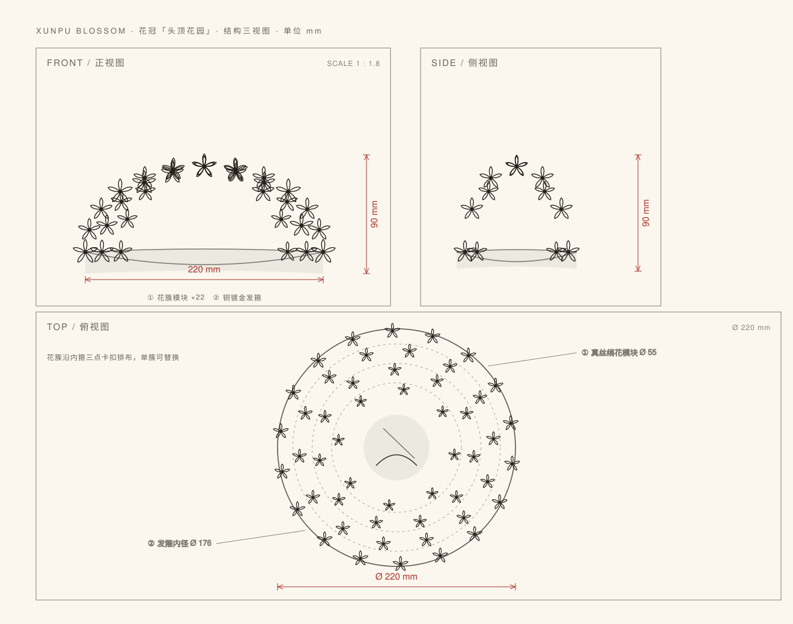

单品 01 · 可佩戴
花冠 · 头顶花园
Adjustable Flower Crown / 22 Modules
把蟳埔女的一顶花园，做成可以反复佩戴的日常饰物。二十二簇绢花沿发箍层层围戴，单簇三点卡扣，可拆、可换、可补。
¥398
含亚麻收纳袋 · 礼盒版 +¥60
| 外径 | Φ 220 mm |
|---|---|
| 高度 | 90 mm |
| 发箍内径 | 160 — 185 mm 可调 |
| 净重 | 168 g ± 5 g |
| 材质 | 真丝绢花、棉线缠花、铜镀金发箍、淡水珍珠 |
| 模块 | 花簇 22 簇，三点卡扣可替换 |
国家级非遗元素
手工缠花
可替换模块
泉州本地工艺
每簇绢花由手工缠制：花瓣逐片高温定型，再以棉线缠出花心与花托，单簇约需 40 分钟。发箍为黄铜电镀哑金，表面做防氧化处理；卡扣采用不锈钢弹片，反复拆装不松动。
花簇按三层围戴逻辑排布：外圈大花定轮廓，中圈主花定节奏，内圈小花填缝隙。
发箍内径可在 160—185mm 之间调节，适配多数头围。佩戴时先将发箍贴合耳上位置，再把花簇由外向内依次卡入；单侧建议留 1—2 簇空缺，让层次有呼吸。
整冠净重 168g，接近一顶针织帽的重量，可短时日常佩戴。
绢花不防水，请勿浸洗或长时间雨淋。除尘用软毛刷轻扫，或低压冷风吹拂。收纳时放入附赠亚麻束口袋，避免重压与阳光直射。
若单簇损坏，可单独补配，无需整冠更换——这正是模块化设计的用意。
标准包装为亚麻束口袋 + 再生纸外盒 + 说明卡；礼盒版另附硬质礼盒、编号卡与手写祝福卡。
企业定制 50 套起，可替换花簇配色、加印 LOGO、定制吊牌。常规打样 7 个工作日，量产 20—30 天。
结构 — 三视图
Front / Side / Top · 单位 mm
一顶花冠的工程图纸

① 花簇模块
三种规格（大 / 中 / 小），共用同一卡扣接口。可单独补配、替换配色。
② 铜镀金发箍
三处卡扣位，内径可调。哑金电镀，避免高光过亮、压过花的质感。
③ 三层围戴逻辑
外圈 8 簇、中圈 8 簇、内圈 6 簇。外大内小，俯视时形成同心花环。
配色 — 三种
按季节与场合选
同一顶花冠，三种情绪
素馨白
花市清晨
白与米为主，少量金色花心。最接近蟳埔女日常的那一顶，适合旅拍与婚礼。
含笑金
节庆暖调
加深金色与奶油色比例，户外日光下更出片，适合节庆与年礼。
刺桐红
城市性格
以刺桐红点染，强调泉州的城市色。适合商务礼赠与城市联名。